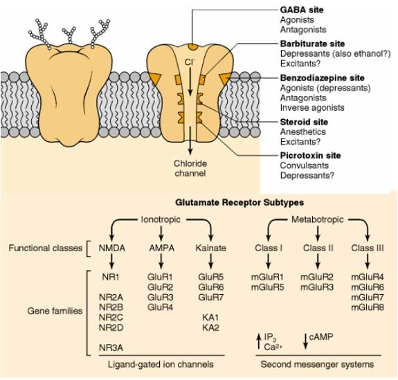
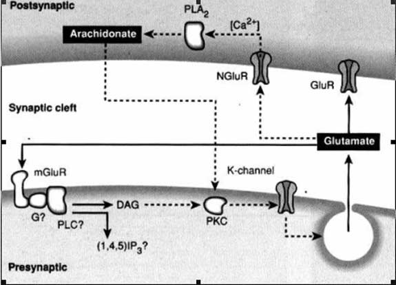
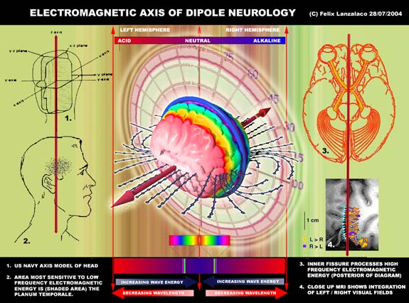
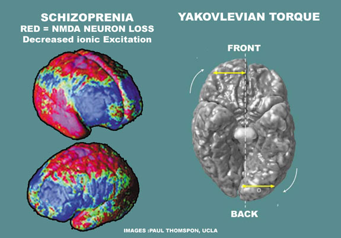

SECTION 3 : NEUROCHEMICAL EVIDENCE FOR A BRAIN DIPOLE
SECTION ABSTRACT
Here we look at harder evidence for the idea that the entire brains content must be consistent with an electric dipole structure. Neurotransmitters, receptors, ions, neuromodulators and lipids,
First I tackle the cortex primary grey matter, Gaba and glutamate. I describe their ratios, function and systems properties within the cortex. I then set out on a a meta-analysis of existing information to prove that the glutamate system is lateralized in the Right Cerebral hemisphere (RCH) and Gaba system is lateralized in the Left Cerebral Hemisphere (LCH). This includes their enzyme and lipid process also.
Also from further analysis it is revealed that NMDA receptors are strongly lateralized to the right temporal lobe, and GabaA receptors to the left temporal lobe. As temporal lobes have highest grey matter density it is proposed that the temporal lobes represent the cortex dipole’s poles as they contain the greatest separation of charges in the brain on many levels :
- Seperation of Na+ and Cl- for use in NMDA and GabaA respectively.
- Seperation of De and Hyperpolarization for NMDA and GabaA respectively
- Seperation of Base and Acid cellular states for NMDA and GabaA respectively.
- Seperation of Excitatory and Inhibition processs for NMDA and GabaA respectively.
Following this a meta-analysis of secondary cortical content, neuromodulators, dopamine, serotonin and related chemical groups. Dopamine and chemical groups are RCH and Serotonin and groups are RCH In general the distribution of LCH brain content is easy to pin down and has convergent system properties while the distribution of RCH brain content is harder to pin down and has divergent system properties.
I then make the point that both Gaba and dopamine are not only RCH lateralized but also tend towards acidic processes while Glutamate and Serotonin are not only LCH lateralized but also tend towards base processes. The acid / base lateralized systems for both primary neurotransmitters and neuromodulators exist in an axis (as one increases in the brain the other decreases and vice versa)
Following this a some conceptual diagrams to explain the acid / base
Distribution along with frequency reduction towards the poles (a feature of radiating dipoles). I highlight a breakdown of brain processes to explain this model. Finally for the last of the ten dipole features torque and spin, I reveal their neuroscience correlates.
REVERSE CHARGE POLARITY AT THE BRAINS POLES
THIS IS A SUMMARY OF THE TWO PAPERS : TENSEGRITY SYSTEM WITHIN NEURON CHEMISTRY AND NEUROCHEMICAL MODULATORS
The poles of a dipole, electric or magnetic have polarity. Since the brain structure is mostly electrical it has to be presumed that we are looking mainly for electric polarity. Positive and Negative or it's counterpart in complex physiology which could be defining these poles in many other ways : Acid/base, Hyper/depolarized etc. As long as we have a seperation of charges, and these converge/diverge towards specific points, which are at opposite ends of the brain. In the previous section i looked at the upper temporal lobes as not only the points of greatest brain assymetry in the neuropsycholigical systems terms to define a dipole, but also structurally in that they lay between the toroidal cavity/ bloch wall and correlated with dipole branching of field lines.
The purpose of this section is to provide proofs in the language of neuroscience. Reviews of the availible scientific literature on the brains small scale content : neurotransmitters, receptors and neurochemical distributions, finds a wealth of evidence describing cross hemisphere reversals of brain content, which assist in line with the charge requirements of the dipole model. Something like this (below)

This subject has been tackled in two papers LINK. The first which attempt to show that the distribution of primary ionic excitatory and inhibitory neurotransmitters Gaba and Glutumate, their voltage gated receptors and ions, have a reverse symmetry (they resemble each other in an opposite manner…see diagram above) The results lateralised in line with a dipole model and the systems theory definitions of their expected properties (convergent left hemisphere, divergent right hemisphere). At the temporal lobes or poles, the Glutamate AMPA/KAINATE sodium firing receptors were found to be lateralized at the right poles with the GABAA / GABAC chlorine firing receptors at the left pole.
Before jumping into the long and technical proofs, it should be borne in mind that what is being looked for is a separtion of charges at the brains poles which could arise in development before neurons become active. The primary ions involved in left / right brain lateralization are negatively charged chlorine and positively charged sodium. I will show that Gaba is lateralized to the left hemisphere and Glutamate in the right hemisphere, more so at the temporal regions. Gaba forms mainly convergent neuron networks and fires negatively charged chlorine ions which inhibit neurons. Glutamate forms mainly Divergent neuron networks.and fires positively charged sodium ions which excite neurons.
In systems theory terms this choiced of ions nature has selected looks extremely hopefull for a system of opposite charges.. NaCl itself as a salt crystal is known to have a tensegrity structure, which means that in systems terms sodium and chlorine exert an equal amount of push and pull towards each other. This is interchangablly known as convergence/ divergence. It fits on many levels. Systems theory definitions of convergent / divergent describe dipole poles, as well as the interaction of NaCl, which one of the ideal elements if you were to set about building a biological based seperation of charges

Tensegrity patterns within sodium chloride crystal, taken from visualizations of Madelung constant (174) (The energy of a particular crystal structure relative to the same number of isolated molecules ) A symmetry of constant and repeating quantities appear to recurse for both interactions with attraction and repulsion. Looking at the patterns from the NaCl lattice. For equal values of R, the number of constant connections remains 6 throughout any scale. That is they appear if beginning outwards from Sodium or chlorine in the centre, while working outward through the increasing connective radius. This cubic kind of charge opposite symmetrical tension and integrity exists for NaCl as a crystal and only a handful of other organic element combinations.
EXAMINING THE CORTEX PRIMARY NEUROCHEMICAL CONTENT
The ratio of cortical glutamate to gaba neurons is approx 25/75. (74) This unequal ratio of number, does not represent the ratio of inhibitory/excitation in the brain.
1. GABA has a higher fidelity of information transmittal than that of other known major neurotransmitters, (22a)
2. The numbers of dopamine neurons and pathways in the brain, is small compared to the number of serotonin neurons, yet they still compete equally for chemical resources and brain territory, with dopamine controlling the left hemisphere and serotonin the right. (REF) Adding serotonin decreases the formation of dopamine and vice versa. (128) (mod paper) Gaba and Glutamate also exist on such an axis : Acidification decreases postsynaptic efficacy of glutamate, and alkalinization increases it while alkalinization decreases GABAergic inhibitory function and acidification decreases it. (22a) The point is that i would predict the GABA/NMDA system exists in some kind of balance, even if how they express themselves in bare numbers of components does not appear balanced. The cortex does tend towards excitatory processes, but this need not rely on Glutamate. Gaba neurons can also exert disinhibtion
3. The ratio of cortical gaba synapses is estimated at 40%. (352,353) . They can exert a lot of control with a minority numbers of synapses.
“The ubiquity and extent of immunocytochemically visualized presynaptic endings of inhibitory GABAergic neurons on various structures in the vertebrate nervous system are striking. The impression is that of looking at a highly restrained nervous system…. This is accomplished largely by the disinhibition of pacemaker neurons whose activities are under the dual tonic inhibitory controls of local-circuit GABAergic neurons and of GABAergic projection neurons coming from neural command centers.. ….cortical and hippocampal pyramidal neurons are literally studded with terminals from inhibitory GABAergic neurons. Not only are the endings of the local-circuit GABAergic aspinous stellate neurons densely distributed around the somata and dendrites of the cortical pyramidal cells, but they are also located on initial axon segments, where they act as frequency filters”(22a)
4. Cortical chaos is also tamed by sensory thalamic input, (75) The thalamus is entirely coated with G-protein GabaB inhibitory receptors. (76)
5. Glutamate receptors are highly diverse. Glutamate is more likely to form divergent network. The same transmitter can activate many kinds of receptors and responses. Gaba receptors are mostly homogenous. Gaba has a diverse number of transmitters directed at a single chloride channel. (see diagram below) Convergent networks activate many types of response from a single source, and need smaller numbers of components to match a divergent network. (REF)

Top graphic : Gaba receptors are heterogenous and can be targetted by many neurochemicals. They will naturally tend towards convergent networks. Bottom Graphic : Glutamate receptors proliferate in type but have one trigger. They will tend to form divergent networks.
In mind of the last point above, the cortical dipole proposal in the previous section points out that in comparison to each other, the left hemisphere is a convergent system and the right hemisphere a divergent one. It is no surprise that the inhibitory Gaba receptors are lateralized in the left hemisphere. (24,25,26). However something that has come up in this research is that other researchers have a harder time pinpointing cortical distributions of right hemisphere excitatory Glutamate, or Serotonin receptors in comparison to their left hemisphere inhibitory counterparts Gaba or dopamine. (REFS) Divergent networks are harder to pin down due to their heterogeneous proliferations.
This gives me quite a task. I have to prove that not only is Gaba left lateralized, and Glutamate right lateralized but for a dipole that there will be more Gaba at the brains left pole, and more Glutamate at the right pole. Luckily for this project, there was such an intense amount of research in lateralization from 1970 to 1990, that there is a wealth of papers describing lateralization’s, for most major component’s in the brain. I might have seem to have overdone it on the proof’s here, but there will be mistakes and problems, so if two out of six are ok, I probably still have some kind of case.
NOTE : LCH is Left Cerebral Hemisphere, RCH is Right Cerebral Hemisphere
1. PROGESTERONE AND TRANSCOLLOSAL GABA / GLUTAMATE
This part looks at Gaba and Glutamate progesterones effect on brain hemisphere decoupling and relates them to experiments where each hemisphere is treated separately with glutamate.
2. ISOPRENOID PATHWAY AND GLUTAMATE IN RCH
Some research from India that suggests the Right lateralization of glutamate can be inferred from other biochemical markers, which they have selected.
3. LCH ENZYMES LIMIT GLUTAMATE AND MODULATE GABA
Some research which shows that enzymes in the LCH inhibit Glutamate and modulate GABA
4. MODULATION OF GLUTAMATE IN RCH BY ARACHIDONIC ACID
Glutamate LTP is modulated by RCH lateralized fats Arachidonic acid (AA and their precursors) prostaglandin E2 (PGE2) and Phospholipase platelet A2 (PLA2)
5. INHIBITION OF AA, PLA2 AND PGE2 IN LCH BY GABA AND OMEGA 3
Amazingly a reverse of the above in the LCH. AA, PLA2 and PGE2 are all inhibited either by Gaba or Omega 3 lipids. Omega 3 and 6 appear to be lateralized to the LCH and RCH respectively.
6. EXTREME POLAR LATERALIZATION IN SCHIZOPHRENIA
An important evidence section for a dipole model here. I try to make a case that Gaba is lateralized extremely at the brains left temporal regions, with the reverse true for Glutamate (right temporal regions).
PROOFS FOR DIPOLE NEUROCHEMICAL DISTRIBUTION
1. PROGESTERONE AND TRANSCOLLOSAL GABA / GLUTAMATE
Cortico-cortical transmission is mostly dependent on a glutamate-induced initial excitatory postsynaptic potential (EPSP) exciting pyramidal neurons which receive transcallosal input. (38) (EPSP) are followed by a dual component inhibitory postsynaptic potential (IPSP) which involve the activation of GABA-ergic (GABAA and GABAB) interneurons. (44) left hemisphere performance increased under progesterone due to a decoupling of the right hemisphere. (38) progesterone enhances the Gaba chloride ion channel receptor (31, 32) and attenuates the effect of glutamate (31)
“Glutamate treatment of the left hemisphere retards visual discrimination learning and auditory habituation, as does glutamate treatment of both hemispheres, but treatment of the right hemisphere is without effect on these behaviours. An imbalance generated by administering glutamate to the left hemisphere causes a marked increase in aggressive and sexual behaviour, which does not occur either after treatment of both hemispheres or treatment of the right hemisphere. “ (41)
Glutamate treatment of the LCH (Left Cerebral Hemisphere) has marked excitatory effect (increase in aggression) and retarding sensory processing effect because there is little transcallosal inhibition from the RCH (Right Cerebral Hemisphere) Glutamate treatment of the RCH has no effect because there is transcallosal inhibition from the LCH Glutamate treatment of both LCH and RCH retards both hemispheres sensory processing but with no LCH increase in aggression. RCH is retarded because LCH inhibition is affected by glutamate treatment, while LCH is less extremely affected as there is still some degree of transcallosal inhibition from the RCH. This tells us is the LCH is not as equipped to handle the same glutamate levels as the RCH as there is little inhibition coming from the RCH.
2. ISOPRENOID PATHWAY AND GLUTAMATE IN RCH
Two of the tryptophan derived modulating co-transmitters quinolininc acid and serotonin are found to add greater excitement to glutamate transmission as well as elevated HMG CoA reductase activity which correlates with elevated digoxin levels inhibiting membrane Na+-K+ ATPase. (49) All three of these of these glutamate exciting biochemical factors have been found by these researchers to be lateralized in RCH. (48,50,51,52)
3. LCH ENZYMES LIMIT GLUTAMATE AND MODULATE GABA
Several enzymes involved in lipid metabolism and Ca2+/ phospholipid-dependent protein kinasePKC activation are lateralized to the left cerebral hemisphere. (611) Higher incorporations were attained by phosphatidate and phosphatidylinositol-4,5-bisphosphate (PIP2) into the left cerebral hemisphere synaptosomal fractions than in the right PIP2 is involved in the initiation of intracellular calcium release and PKC activation. (613)
The left cerebral hemisphere (LCH) displayed about 50% more PKC activity in synaptosomal fractions than the right cerebral hemisphere (RCH). (56) “Activation of PKC inhibits the ability of group II and group III mGluRs to regulate transmission at three major synapses in the hippocampal formation. Thus, this effect may be a widespread phenomenon that occurs at glutamatergic synapses throughout the CNS ……( PKC), modulates GABA transporter function, exerts its modulatory effects by regulating the availability of syntaxin 1A to interact with the transporter ” (45) “Syntaxin 1A and PKC functionally regulate GABA transport in cells that endogenously express these proteins. Syntaxin 1A is a plasma membrane protein involved both in trafficking and (neurotransmitter) vesicle docking and/or fusion and in the direct regulation of Ca2+ channels and cystic fibrosis transmembrane regulator (CFTR) Cl channels” (34)
4. MODULATION OF GLUTAMATE IN RCH BY ARACHIDONIC ACID
Lateralization of AA is higher in the right hemisphere (57,58) Arachidonic acid is derived from long-chain polyunsaturated fatty acids (LC PUFA) and is a precursor of pro-inflammatory (PGE2) prostaglandin E2 (58,60) which modulate postsynaptic membrane excitability and long-term synaptic plasticity (53) AA originates at postsynaptic glutamate site in response to Phospholipase platelet A2 (PLA2) activation. PLA2 activating factor is a retrograde messenger of long-term potentiation, a modulator of glutamate release, and an upregulator of memory formation. (53)
Mechanisms within the glutamate system have been found which facilitate amplification of glutamate and Calcium release (43) by arachidonic acid. Furthermore these mechanisms are thought to be implicated in NMDA (LTP) Long term potentiation. (43, 42) Cat Behavioral change is lead by LTP in the right amygdalo–hippocampus. (79)
43 “Arachidonic acid may act by binding to a site on the NMDA receptor, or by modifying the receptor's lipid environment. Our results suggest that arachidonic acid released by activation of NMDA (or other) receptors will potentiate NMDA receptor currents, and thus amplify increases in intracellular calcium concentration caused by glutamate. This may explain why inhibition of phospholipase A2 blocks the induction of long-term potentiation”

5. INHIBITION OF AA, PLA2 AND PGE2 IN LCH BY GABA AND OMEGA 3
In the LCH, GABA and omega 3 variants appear linked in a similar way to AA and glutamate. There may be an axis with increases in LCH components reducing the effeciacy of Arachidonic acid (AA) prostaglandin E2 (PGE2) and Phospholipase platelet A2 (PLA2) that were all involved in modulating glutamate and LTP in the RCH. This fits with a reversal model for the hemispheres.
GaBA receptors activated by Barbituates attenuate arachidonic acid during global ischemia (72) The attenuation of AA by LCH GABA receptor precursors could explain why the lateralization of AA is significantly higher in the right hemisphere (57,58) Omega 3 (DHA) which modulates Gaba (35) (Gaba being LCH lateralized(24,25,26)) reduces AA metabolite prostaglandin E2 (PGE2) (84) which modulates NMDA postsynaptic membrane excitability and long-term synaptic plasticity (53) in the RCH.
Schizophrenia is marked by glutamate dysfunction (78, 81,602a) which leads to LCH asymmetry (602b,80) LCH asymmetry was shifted back to balanced LCH/RCH processing following treatment with omega 3 (EPA) acid. (759c) Omega 3 Eicosapentaenoic acid (EPA) inhibits the AA triggering enzyme Phospholipase platelet A2 (PLA2) (609) PLA2 hydrolyzes fatty acids like AA from membrane liberated omega-6 PUFAs (73) inhibition of PLA2 reduces synthesis of arachidonic acid (AA) (599b). Omega 3 (DHA) also inhibits AA metabolite prostaglandin E2 (PGE2) (84). (The pathway is PLA2 – AA - PGE2, see diagram above) PLA2 activating factor is a retrograde messenger of long-term potentiation, a modulator of glutamate release, and an upregulator of memory formation. (53)
As PLA2 activity is elevated in schizophrenia (609) leading to abnormal AA fat metabolism and oxidative stress (602c) presumably linked to glutamate/NMDA dysfunction (78, 81,602a) This would represent one part of the decrease in RCH lateralization and increase to LCH asymmetry. EPA competes with AA for incorporation into phospholipids (599c) so increasing EPA alters the axis of brain back from LCH to RCH. Several of the papers here point at lateralization of various brain fats. (611,614,615,755, 57,58) Reviewing the above points leads to a LCH/RCH axis based round Omega 3/Omega 6, with Omega 3 linked to modulate Gaba in the RCH and Omega 6 linked to modulate Glutamate in the LCH, while omega 3 inhibits glutamate functions in the LCH.
|
Left Cerebral hemisphere
GABA MODULATORS (w3) |
Right Cerebral hemisphere
GLUTAMATE MODULATORS (w6) |
|
|
|
Omega 3 (EPA) Reduces |
|
Phospholipase A2 |
Omega 3 (DHA) modulates (35) |
Gaba (24,25,26) |
|
Omega 3 reduces |
|
PGE2 (Omega 6 metabolite) (84) |
GaBA / barbiturate reduces |
|
Omega 6 AA (85)(86) |
Glutamate LTP modulated by |
|
Omega 6 (AA) (87,83,88) |
6. EXTREME POLAR LATERALIZATION IN SCHIZOPHRENIA

As was shown Schizoprenia laterality can be linked to imbalances of lipids associated with either brain hemisphere. Schizophrenia which is now considered to be a dysfunction of dysregulated N-methyl-D-aspartate NMDA receptors operating at reduced activity. (78, 81,602a). The enzyme that degrades the NMDA receptor antagonist N-acetyl-alpha L-aspartyl-L-glutamate (NAAG), is in the hippocampus, prefrontal cortex, and temporal cortex of patients with schizophrenia.. (82) Grey matter loss is not symmetrical between hemispheres and does not correlate with areas of highest grey matter density as it does in alzheimers. Grey matter loss does correlate with veinous return system which is symmetrically distributed (left in image above, veins are blue).
However even though the grey matter loss correlates with a symmetrical system of the brain, the disease progresses slightly asymmetrically in top parietal right hemisphere. Two years later (image above) grey matter loss becomes symmetrical in parietal then extremely assymetrical in right temporal, when rates of temporal loss start to correlate with the onset of positive symptoms (602b,80)
As neuron density is equal amongst hemispheres and even slightly greater in the left temporal lobe (351) it’s proposed that these asymmetrical patterns of loss especially at the temporal lobes, represent a more extremely lateralized distribution of NMDA to GABA receptors in the cortex proposed dipole poles. There is left hemisphere asymmetry of Gaba receptors and neurons in left auditory cortex (440b) While Reduction of Gaba concentration in the left temporal pole but not the right is correlated with extreme anxiety. (400c) Implying that Gaba loss in the left temporal lobe has worse consequences than Gaba loss at the right temporal lobe. What you would expect if the left temporal lobe operates its functions more greatly on Gaba. Gaba loss at the left but not right temporal lobe is also correlated with a move to secondary symptomns of schizoprhenia.
There is a slightly decreased dysfunction of GABA receptors in the left hippocampus as schizophrenia moves towards first positive sympoms. (402) This is because NMDA-mediated glutamatergic activity impinges on GABA interneurons(604) NMDA-mediated GABA release is markedly decreased. (604) However this is a sub symptom of NMDA hypofunction (82) resulting in disinhibition that impairs cortical-hippocampal processing (82) Only a specific minority of Gaba neurons are affected (605,606,608) This asymmetrical NMDA hypofunction induced damage to Gaba function in the left hippocampus highlights that there is an asymmetrical distribution of GabaA receptors in the left hippocampus. GabaA receptors are globally heterogeneous, so if they exist equally in the right hippocampus it would be expected that there would no dysfunctional asymmetry. To summarize, the above strongly suggest that GabaA receptors are strongly leftwards lateralized to the brain’s proposed poles, the Hippocampal, temporal, auditory areas.
As for glutamate, as was shown in the section above “INHIBITION OF AA, PLA2 AND PGE2 IN LCH BY GABA AND OMEGA 3” PLA2 activity is elevated in the RCH. Left brain asymmetry in Patients with schizophrenia was shifted back to balanced left/right processing following treatment with omega 3 eicosapentaenoic acid. (759c) which reduces PLA2 activity (609a) For the purpose of a dipole model PLA2 activity which is lateralized both to RCH and glutamate LTP was increased by 45% in the temporal cortex of patients with schizophrenia but was not significantly altered in other brain areas (602c) This would have been rebalancing of the brain dipoles right temporal cortex. That area accords with the dark red temporal areas seen in the UCLA images above.

While the above section points out there is an asymmetry of primary NMDA and GABAA receptors at the brains temporal poles, the above diagram shows that these are also the areas with the highest neuron densities. In alzheimers the brain areas affected first are those of highest neuron density. The temporal lobes could then be said to contain the brains greatest seperation of positive and negative charges.
SUMMARY OF THE ABOVE SIX SECTIONS:
The brain has a greater degree of excitatory NMDA related function in the right than the left hemisphere, and GABA related function in the left. This applies to many of it's related lipid and enyme processes. At the left and right temporal poles there is a greater degree of Asymmetry between GABA and NMDA respectively, These areas contain the brains highest seperation of the negative (CL-)and positive (NA+) charges active at any time in the processes of Hyper and Depolarization respectively. Not suprisingly similiar lateralization patterns also appear to be emerging for enzyme, modulation and lipid processes associated with the brains primary grey matter content.
| PROCESS
|
LCH |
RCH |
POLAR LATERALIZATION |
|
|
Schizoprenia NMDA receptors reduced (78, 81,602) |
|
increasingly RCH hypofunction asymmetrically to RCH temporal lobes (602b,80)
PLA2 activity ncreased by 45% (602c) |
Gaba receptors |
Asymmetry at left auditory cortex (440b) |
|
Anxiety states |
Gaba reduced at left temporal pole (400c) |
|
NMDA hypofunction |
damage to Gaba function in the left hippocampus (82) |
|
GENERAL LATERALIZATION |
|
|
|
Gaba receptors are lateralized(24,25,26) |
|
Progesterone
Enhances Gaba chloride ion channel receptor (31, 32)
attenuates the effect of glutamate (31) |
increasing left hemisphere performance (31) |
|
Glutamate treatment of each hemisphere (41) |
retards processing, increases rat aggression (41) |
No problems |
Quinolininc acid, HMG CoA reductase, serotonin are glutamate agonists (48,50,51,52) |
|
lateralized in the RCH(48,50,51,52)
glutamate agonists |
Enzymes in the PKC phosphatidate and phosphatidylinositol-4,5-bisphosphate (PIP2) |
LCH lateralized, (611,613) 50% more activity in LCH synapses (56). modulate GABA (45,34) |
inhibit Glutamate (45) |
arachidonic acid (AA) Amplification of glutamate and Calcium release (43) implicated in NMDA (LTP) Long term potentiation |
|
arachidonic acid (AA) is RCH lateralized (57,58) |
GaBA receptors |
attenuate arachidonic acid AA (72) |
|
|
|
|
Glutamate modulators (omega 6 related) |
|
AA, it’s precursors PLA2 and metabolites PGE2 (inhibited) by Gaba (72,84) or Omega 3 lipids. (609a,599b,84,599c) |
Schizoprenia dysfunctional NMDA processes (78, 81,602a,) |
LCH asymmetry (602b,80)
increasing omega 3. (609b,759c) reduces LCH asymmetry |
overproduction of omega 6 AA reduces RCH due to oxidative stress. (602c) |
Glutamate LTP in cats |
|
Led by right amygdalo–hippocampus. (79) |
ABOVE: Summary table of known lateralization of GABA. While it's clear that GABA is LCH, Glutamate receptors, proliferate heterogenously through the brain. It's cerebral distribution, can only be pinned down by related markers and processes.
NEURON MODULATORS
The second paper neurochemical modulators tackles the brains primary submodulators dopamine, serotonin, their receptors and associated chemical groups in a similar manner. With the above depth gone into on primary transmitters, this is just a brief summary of a 20 page work on brain modulators.
ACID BASE PROPERTIES OF DOPAMINE AND SEROTONIN
IF we recall from the above, Gaba and Glutamate exist on an acid/base axis : Acidification decreases postsynaptic efficacy of glutamate, and alkalinization increases it while alkalinization decreases GABAergic inhibitory function and acidification decreases it. (22a)
"Coordinate enhancement with progressive acidification occurs in GABAergic inhibitory function because GABA formation and its anion channel-opening efficacy are increased while its metabolic destruction by transamination and removal by transport are decreased. Diminution of GABAergic inhibitory function occurs on alkalinization. Contrariwise, acidification decreases postsynaptic efficacy of glutamate, the major excitatory neurotransmitter, and alkalinization increases it." (22a)
The following presents evidence that Dopamine and Serotonin can be considered similiar to Gaba/Glutamate, both operating on acid/base competition axis in a similiar manner.
BASE/CATION PROPERTIES OF SEROTONIN
serotonin transport by plasma membrane vesicles occurs at pH 6.7 and 9. It's substrate form for the serotonin transporter is the cation “(134,146) Optimal pH for serotonin synthesis was about 7.2. As the pH of the suspension medium decreased below 7 the rate of serotonin formation declined” (134) over one-fourth of all tryptophans in the protein data bank experience an energetically significant cation-pi interaction.” (106) Studies of some of the receptors for trytophan derived neurotransmitters nicotine and Serotonin find they have cationic binding properties, named Cation-p interactions. (108, 154, 160,162)
ACID/ANION PROPERTIES OF DOPAMINE
Dopamine has a “proton flopping” anionic clock.(126) Dopmine or any of the tyrosine derived catecholamines neurotransmitters has no electrical junctions, and decouples any local electrical junctions. Is this due to dopamine increasing acidity ? Serotonin has electrical junctions and these release sodium cations. Intracellular acidification reduces gap junction coupling. (134) Also Receptor held dopamine is an electron deficient anion Pi species, which would increase the acidity of it’s environment. Dopamine operates in lower local Ph environments. (98) “Optimal pH for dopamine production is 6.1 and when experiments were performed at pH 7.4 the rate of dopamine formation decreased to about 25% of that at pH 6.1.” (128) Finally DAT transporter modulates, potentiate an uncoupled Chlorine anion conductance associated with the dopamine transporter (120).
DOPAMINE/SEROTONIN ACID/BASE AXIS
“It is known that the level of free tryptophan in the blood can influence the transport of tyrosine across the blood brain barrier into the brain and vice versa, since both these amino acids share the same transport systems and compete with each other.” (246)
“The rate of dopamine or serotonin synthesis in rat brain synaptosomes is determined as a function of pH.(134) Adding serotonin decreases the formation of dopamine and vice versa. These were Ph dependant with dopamine production at a lower Ph than serotonin. (128)
LATERALIZATION OF TYROSINE AND TRYPTOPHAN GROUPS AND THEIR NEUROTRANSMITTERS
Dopamine and its groups are lateralized in the left hemisphere, Serotonin and its groups are lateralized in the right hemisphere.
MOLECULE |
LCH |
RCH |
Tyrosine |
|
|
Derived |
|
|
Dopamine |
242,198,240,238, 200 |
|
Noradrenaline |
234,74,236 ,198 |
|
Morphine |
234,74,236 |
|
Tryptophan |
|
|
Derived |
|
|
Serotonin (tryptamine) |
|
234,74,236,200,216, 224 |
nicotine |
|
226,228,234,74,236 |
quinolinic acid |
|
234,74,236 |
Dopamine and serotonin receptors types are reversals of each other and have convergent cation / divergent anion properties respectively which fit with the prediction of systems theory. Serotonin receptors profilerate in variety of types, while they trigger very basic g-proteins signals. Conversely there are few dopamine receptors which trigger many g-protein signals.
Also the reversal is apparent within their g-protein mechanisms.
D1 receptors : Stimulation of adenylyl cyclase,
5HT1 receptors : Inhibition of adenylyl cyclase
D2 receptors : Inhibition of phosphoinositide-specific phospholipase C
5HT2 receptors : Stimulation of phosphoinositide-specific phospholipase C
SUMMARY SO FAR
Medical databases contain a wealth of data to illustrate that entire chemical groups and their primary subtypes like Dopamine can be grouped with Gaba in the LCH and Serotonin with Glutamate in the RCH. All of these exist on a LCH acid, RCH base axis system. LCH neurochemicals and receptors have convergent homogenous properties while RCH neurochemcals and receptors have divergent heterogenous properties.
FREQUENCY REDUCTION AND ACID/BASE CHANGES TOWARDS THE POLES
The above indicates a complete dipole model of brain content can be put together based on neurochemical acid/base properties. As there is a greater concentration of Gaba and NMDA receptors at the brain's pole the ionic gradients will tend to be more acidic at the left pole, and alkaline at the right pole. The dipole seperation of charges can now be based on several levels. Polar Seperation of Postive and negative ions used in neurotransmission (Na+, Cl-). Polar seperation of acid/ base reactions and polar seperation of Hyper/depolarizing proceses.
The Acid/Base seperation at poles, will be represented in a visual diagram below. While constructung such a complete cortical dipole model it is also important to show that in electric dipole as two charges move apart from the midline and distance increases (CHECK) their wavelength and wave energy decreases. In a similiar way that the Dipole was able to simplify small scale brain content, This frequency reduction aspect could have ramifications for the entire distribution of neural processing
The brain is proposed to be an electric dipole defined primarily by the seperation of its charges at the temporal regions. Each ionotropic neuron synapse in the cortical layer is isolated as a series of point like charges into neuron assemblies connected by axons to its opposite charge counterpart across hemispheres. (this is a simplification of brain wiring of course). At the midline of this seperation the corpus callosum, we find that the brain processes visual sensory information, which has high electromagnetic frequency. Moving out from the midline the receptive fields which process vision increase with size to process larger aspects of visual information with lower frequency information. Moving out further to the auditory cortex at the temporal lobes, the eletromagnetic frequency for sensory input dips sharply to 20,000 hz., This higher frequency auditory information is processed first then moving out further decreases in steps to just 15hz.

This diagram shows the processing of high to low frequency information (visual to auditory) is spread across the brain consistent with the slowing of frequency distribution towards the pole of a dipole. At a dipole midline (In the diagram above the central disc represents the dipole midline.) electromagnetic energy is at it's highest frequency and then slows towards the poles. The visual system mirrors complex processing of high frequency information. (3,4 in fig above) in either side. As processing moves out from the midline to the auditory regions (where the arrow emerges as well as 2 in figure above) Lower frequency information is being processed with higher degrees of polarization.
Moving forward in the brain the distribution of high to low frequency from midline out repeats. The motor strip deals with feet, then further out higher up the body finally at the face. The fastest processing is needed for flight and fight reactions, while the slower processing for communication. Again forward to the frontal lobes, the midline shunts up fast reacting emotional,spatial and memory data while moving out from the midline motor processing occurs, and in farthest regions the slower requirements of speech and social interaction.
TORQUE AND POLARITY ARE BOTH FEATURES OF DIPOLES
Electric dipoles undergo torque or precession, which means they spin at an angle within a magnetic field. Remeber the brain model proposed is of a bioelectric dipole coated by a magnetite/ ferrihydrite/ lipid ferrofluid, so some torque is feasible. Brains have two known torque structures formed in childhood known. One is known as Yakovlevian torque. It is as if the entire brain is trying to twist round on itself. Another is called volume torque, which looks like temporal lobe is leading one side from the other. The dipole model proposes answers for both.

The cortical ferrofluid develops magnetic field coherence when blood deoxygenates and neurons fire their electromagnetic field to it. Under those conditions there is a theoretical explanation for whole brain Yakovlevian torque due to precession within the brain regions that bind together. In an adult this isn't known of. Regions bind together but not the entire brain. In neurodevelopment the brain structures changes through extremes, where there is abundance of bias towards the white connective matter, which is prominent in brain binding.
The brain dipole model also proposes that two opposite kinds of charge are present at either temporal lobe. Negative at the left and positive at the right, due to the ions Cl- and Na+ which predominate in either sides primary ionic receptors. Is volume torque near the temporal lobes, the result of opposite forces of charge due to ions ? In schizophrenia volume torque increases.
“ volume torque was changed in schizophrenia-in comparison subjects, the coronal section of maximal left hemisphere volume was more anteriorly placed than on the right [and correlated with left superior temporal gyrus (STG) volume], and, in patients, it was more posterior (showing a reversed correlation with left STG volume).”(20)
In schizophrenia the glutamate / sodium part of the dipole in the right temporal lobe breaks down faster than the left temporal lobe. ( Red in diagram above.) The increased leftward asymmetry in schizophrenia can also be read from the ionic field itself in EEG. The interplay between hemispheres is increased in favour of the left hemisphere.
MORE EXAMPLES OF SPIN IN BRAIN STRUCTURES

LEFT : Medical model mirrored, to show direction of brain folds and vessels. RIGHT : Real angiogram of cortical blood flow mirrored. Both represent same area of brain.
The above diagrams show more features which highlight some kind of spin in brain structure as a whole. Cortical features such as sulci patterns are different even in identical twins, suggesting that they would be plastic to the forces suggested here. These patterns may occur due to magnetic precession at the brain surface, and grow differently due to the unique interactions, even twins will have with the environment.
Section 3 summary
PROBLEM
The Dipole theory predicts a separation of opposite charges at the brains poles, the temporal areas. It also predicts that the entire cortex small scale content, neurons, neurotransmitters, lipid’s, receptors, enzymes and chemical groups are lateralized, in a manner consistent with the overall convergent/divergent processes of the left and right cortical hemispheres respectively.
PROPOSAL
If the cortical dipole model is true, Meta analysing the thousands of papers on lateralization should reveal whether the brain’s small scale content is lateralized consistent with the features of the dipole model.
POINTS
Covered here remaining features of dipoles : 7-10
DIPOLE FEATURE 7 : Charge/field reversal in each side ,
And
DIPOLE FEATURE 5 : Divergence / Convergence
GABA AND GLUTAMATE AS THE CORTEX SYSTEM OF BALANCE
5
The basic ions of the primary neurotransmitters receptors (Sodium for Glutamate and Chlorine for Gaba) have properties of opposing balance which fit will with systems theory requirements for convergence / divergence, and field reversals for each side of the system with opposing charge properties.
The ratio of Gaba to Glutamate neurons is in favour of glutamate 27.5 / 72.5 and do not fit a basic 50/50 balance which would have been sought for a dipole model. However convergent aspects of a system require less firing components, and more control components. The ratio of Gaba to NMDA synapses is 40/60. Because Gaba receptors are homogenous they also attract other types of inhibitory neurotransmitter systems to work for them. An increase in systems power which does not belong to the Glutamate receptors. Glutamate receptors are heterogeneous. They tend towards proliferating many types of connections explaining why there is a higher ratio of neurons.
LATERALIZATION OF GABA (LCH) AND GLUTAMATE (RCH)
A. Progesterone enhances the Gaba chloride ion channel receptor (31, 32) and attenuates the effect of glutamate (31) increasing left hemisphere performance
Glutamate treatment of the LCH retards processing, while treatment of the RCH has no effect (41) indicating that LCH is less suitable environment for glutamate than RCH
B. Quinolininc acid, HMG CoA reductase activity and serotonin are glutamate agonists which are lateralized in the RCH (48,50,51,52)
C. Enzymes in the PKC (611,613) have 50% more activity in LCH synapses (56). These inhibit Glutamate (45) and modulate GABA (45,34))
D. Amplification of glutamate and Calcium release (43) by Omega 6 arachidonic acid (AA) which is RCH lateralized (57,58) is implicated in NMDA (LTP) Long term potentiation. (43, 42) with LTP in cats being lead by the right amygdalo–hippocampus. (79) Conversely GaBA receptors attenuate arachidonic acid during global ischemia. (72)
E. A reverse of the above in the LCH. AA, it’s precursors PLA2 and metabolites PGE2 which are all glutamate modulators, are inhibited either by Gaba (72,84) or Omega 3 lipids. (609a,599b,84,599c)
Schizoprenia LCH asymmetry (602b,80) caused by dysfunctional NMDA processes (78, 81,602a,) in RCH result in overproduction of AA omega 6, being moved back to RCH by increasing omega 3. (609,759c)
It also appears that Omega 3 and 6 appear to be lateralized to the LCH and RCH respectively operating on a competition axis (599c) with omega 3 modulating Gaba (35) and omega 6 modulating glutamate (83,85,86,87,88)
DIPOLE FEATURE 8 : Polarity at Poles
TEMPORAL POLAR LATERALIZATION OF GABA AND GLUTAMATE
An important evidence section for a dipole model here. I try to make a case that Gaba is lateralized extremely at the brains left temporal regions, with the reverse true for Glutamate (right temporal regions).
Schizoprenia NMDA receptors operating at reduced activity. (78, 81,602 degrades the NMDA receptor antagonist N-acetyl-alpha L-aspartyl-L-glutamate (NAAG), in the hippocampus, prefrontal cortex, and temporal cortex of patients with schizophrenia.. (82) The disease progresses increasingly RCH asymmetrically to RCH temporal lobes (602b,80)
PLA2 activity which is lateralized both to RCH and glutamate LTP was increased by 45% in the temporal cortex of patients with schizophrenia (602c)
There is LCH asymmetry of Gaba receptors and neurons in left auditory cortex (440b) Gaba concentration in the left temporal pole is correlated with controlling anxiety. (400c) NMDA-mediated glutamatergic activity impinges on GABA interneurons(604) so NMDA hypofunction induces damage to Gaba function in the left hippocampus (82) The asymmetry of damage indicates that there is an asymmetrical distribution of GabaA receptors in the left hippocampus.
SUMMARY OF THE ABOVE SECTIONS:
The cortical brain has a greater degree of excitatory NMDA related function in the right than the left hemisphere, and GABA related function in the left. This applies to many of it's cortical related lipid,modulation and enzyme processes. At the left and right temporal poles there is a greater degree of Asymmetry between GABA and NMDA respectively, These areas contain the brains highest seperation of the negative (CL-)and positive (NA+) charges active at any time in the processes of Hyper and Depolarization respectively.
DIPOLE FEATURE 7 : Field reversal in each side ,
ACID/BASE LATERALIZATION OF NEUROMODULATORS
The brains primary neuromodulators dopamine, serotonin, their receptors are lateralized in a manner according with acid / base axis competition. Associated chemical groups are also lateralized
Dopamine is lateralized in LCH (242,198,240,238, 200)
Dopamine and receptors have Acid/anion properties (126,134,98,128,120)
Serotonin is lateralized in RCH (234,74,236,200,216, 224)
Serotonin and receptors have Base/cation properties (106,108,134,136,154,160,162)
Dopamine and serotonin operate on a competition axis which is acid/base based (128,134,246)
Tyrosine derived neurochemical are LCH lateralized (242,240,238, 200, 234,74,236 ,198,74,236 )
Tryptophan derived neurochemicals are RCH lateralized (234,74,236,200,216, 224, 226,228,74,236 )
DIPOLE FEATURE 9 : Frequency reduction from mid axis to pole
Frequency of processed sensory information decreases from midline to temporal pole.
Mid / rear brain to temporal area : Small to larger visual fields then high to low frequency auditory processing at temporal poles.
Mid / front brain to temporal area : Physical, emotional, spatial reaction to social interaction and speech at temporal poles.
DIPOLE FEATURE 10 : Torque / Spin
Entire cortex has structural spin in same direction : blood vessels, serotonin distribution, cortical folds.
Yakovlevian torque. Volume torque occurs in left hemisphere in line with a schizophrenia / dipole model. (20)
REFERENCES
20 Lewis DA, Glantz LA, Pierri JN, Sweet RA. Altered Cortical Glutamate Neurotransmission in Schizophrenia Evidence from Morphological Studies ofPyramidal Neurons. Ann N Y Acad Sci. 2003 Nov;1003:102-12.
22a Roberts E, Sherman M. GABA—The quintessential neurotransmitter: Electroneutrality, fidelity, specificity, and a model for the ligand binding site of GABAA receptors. Neurochem Res 1993;18:365-376.
24 Morand N, Bouvard S, Ryvlin P et al. Asymmetrical localization of benzodiazepine receptors in the human auditory cortex. Acta Otolaryngol 2001;121(2):293-6.
25 Cernácek J.. Biochemical and electrophysiological correlations of functional asymmetry of the brain. Bratisl Lek Listy 1989;90(6):458-61.
26 Guarneri P, Guarneri R, La Bella V, Scondotto S, Scoppa F, Piccoli F. Lateral differences in GABA binding sites in rat brain. Neurochem Res 1988;13(3):209-11.
31 Smith SS, Waterhouse BD, Chapin JK, Woodward DJ. Progesterone alters GABA and glutamate responsiveness: a possible mechanism for its anxiolytic action. Brain Res1987;400(2):353-9.
32 Callachan H, Cottrell GA, Hather NY, Lambert JJ, Nooney JM, Peters JA. Modulation of the GABAA receptor by progesterone metabolites. Proc R Soc Lond B Biol Sci 1987;231(1264):359-69.
34 Beckman ML, Bernstein EM, Quick WM. Protein Kinase C Regulates the Interaction between a GABA Transporter and Syntaxin 1A. J Neurosci 1998;18(16):6103-12.
35 Nabekura J, Noguchi K, Witt MR, Nielsen M, Akaike N. Functional modulation of human recombinant gamma-aminobutyric acid type A receptor by docosahexaenoic acid. J Biol Chem 1998;273(18):11056-61.
38 Hausmann M, Güntürkün O. Steroid fluctuations modify functional cerebral
asymmetries: the hypothesis of progesterone-mediated interhemispheric
decoupling. Neuropsychologia 2000;38(10):1362-74.
41 Howard KJ, Rogers LJ, Boura AL. Functional lateralization of the chicken forebrain revealed by use of intracranial glutamate. Brain Res 1980;188(2):369-82.
42 Pellerin L, Wolfe LS. Donner. Release of arachidonic acid by NMDA-receptor activation in the rat hippocampus. Neurochem Res 1991;16(9):983-9.
43 Miller B, Sarantis M, Traynelis SF, Attwell. Potentiation of NMDA receptor currents by arachidonic acid. Nature 1992;355(6362):722-5.
44 Kumar SS, Huguenard JR. Properties of Excitatory Synaptic Connections Mediated by the Corpus Callosum in the Developing Rat Neocortex. J Neurophysiol 2001;86(6):2973-85.
45 Macek TA, Schaffhauser H, Conn PJ. Protein kinase C and A3 adenosine receptor activation inhibit presynaptic metabotropic glutamate receptor (mGluR) function and uncouple mGluRs from GTP-binding proteins. J Neurosci 1998;18(16):6138-46.
48 Kurup RK, Kurup PA. The concept of cerebral chemical dominance. J Neurosci 2003;113(7):957-70.
49 A RK, Kurup PA. Changes in the isoprenoid pathway with transcendental meditation and Reiki healing practices in seizure disorder. Neurol India 2003;51(2):211-4.
50 Kurup RK, Kurup PA. Hypothalamic digoxin, hemispheric chemical dominance, and creativity. Int J Neurosci 2003;113(4):565-77.
51 Kurup RK, Kurup PA. Hypothalamic digoxin, cerebral dominance, and membrane biochemistry. Int J Neurosci 2002;112(12):1439-47.
52 Kurup RK, Kurup PA. Hypothalamic digoxin, cerebral chemical dominance, and calcium/magnesium metabolism. Int J Neurosci 2003;113(7):999-1004.
53 Bazan NG. Synaptic lipid signaling: significance of polyunsaturated fatty acids
and platelet-activating factor. J Lipid Res 2003;44(12):2221-33.
56 Ginobili de Martinez MS, Barrantes FJ. Ca2+ and phospholipid-dependent protein kinase activity in rat cerebral hemispheres. Brain Res 1988;440(2):386-90.
57 Pediconi MF, Rodriguez de Turco EB. Free fatty acid content and release
kinetics as manifestations of cerebral lateralization in mouse brain. J Neurochem
1984;43(1):1-7.
58 Ginobili de Martinez MS, Rodriguez de Turco EB, Barrantes FJ. Endogenous
asymmetry of rat brain lipids and dominance of the right cerebral hemisphere in
free fatty acid response to electroconvulsive shock. Brain Res 1985;339(2):315-
21.
60 Colin A, Reggers J, Castronovo V, Ansseau M. Lipids, depression and suicide. Encephale 2003;29(Pt 1):49-58.
72 Shiu GK, Nemoto EM. Barbiturate attenuation of brain free fatty acid
liberation during global ischemia. J Neurochem 1981;37(6):1448-56.
73 Haag M. Essential fatty acids and the brain. Can J Psychiatry 2003;48(3):195-203.
74 Johansson C, Lansner A. Towards cortex Sized Artificial Nervous Systems. Neural Netw 2007;20(1):48-61.
75 MF Bear, Connors BW, Paradiso MA. Neuroscience : Exploring the brain 2006.
76 Princivalle AP, Pangalos MN, Bowery NG, Spreafico R. Distribution of GABAB(1a), GABAB(1b) and GABAB2 receptor protein in cerebral cortex and thalamus of adult rats. Neuroreport 2001;12(3):591-5.
78 Nyiri G, Stephenson FA, Freund TF, Somogyi P. Large variability in synaptic N-
methyl-D-aspartate receptor density on interneurons and a comparison with
pyramidal-cell spines in the rat hippocampus. Neuroscience 2003;119(2):347-63.
79 Adamec RE. Evidence that limbic neural plasticity in the right hemisphere
mediates partial kindling induced lasting increases in anxiety-like behaviour.
Brain Res 1999;839(1):133-52.
80 Thompson PM, Vidal C, Giedd JN et al. Mapping adolescent brain change reveals dynamic wave of accelerated gray matter loss in very early-onset schizophrenia.Proc Natl Acad Sci U S A 2001;98(20):11650-5.
81 Abi-Saab WM, D'Souza DC, Moghaddam B, Krystal JH. The NMDA antagonist model for schizophrenia: promise and pitfalls. Pharmacopsychiatry 1998; 31 Suppl 2:104-9.
82 Begany, T. Emerging Schizophrenia Treatments Aim to Enhance NMDA Receptor Function. http://www.neuropsychiatryreviews.com/aug04/npr_aug04_schizo.html. 2004 Aug 30/11/2008
83 Ginobili de Martinez MS, Rodriguez de Turco EB, Barrantes FJ. Endogenous asymmetry of rat brain lipids and dominance of the right cerebral hemisphere in free fatty acid response to electroconvulsive shock. Brain Res 1985;339(2):315-21.
84 Colin A, Reggers J, Castronovo V, Ansseau M. Lipids, depression and suicide. Encephale 2003;29(Pt 1):49-58.
85 Shiu GK, Nemoto EM. Barbiturate attenuation of brain free fatty acid liberation during global ischemia. J Neurochem 1981;37(6):1448-56.
86 Hattori T, Nishimura Y, Sakai N, Yamada H, Kameyama Y, Nozawa Y. Attenuation by pentobarbital of free fatty acid and diacylglycerol liberation during global ischaemia in rat brain. Neurol Res 1986;8(1):33-8.
87 Ginobili de Martinez MS, Rodriguez de Turco EB, Barrantes FJ. Asymmetry of diacylglycerol metabolism in rat cerebral hemispheres. J Neurochem 1986;46(5):1382-6.
88 Pediconi MF, Rodriguez de Turco EB. Free fatty acid content and release kinetics as manifestations of cerebral lateralization in mouse brain. J Neurochem 1984;43(1):1-7.
? Leach MR, Chemogenesis: The Story of How Chemical Reactivity Emerges From The Periodic Table of The Elements
http://www.meta-synthesis.com/webbook.html 1999. 30/11/2008.
106 Gallivan JP, Dougherty DA. Cation-pi interactions in structural biology. Proc Natl Acad Sci U S A. 1999;96(17):9459-64.
108 Zhong W, Gallivan JP, Zhang Y, Li L, Lester HA, Dougherty DA. From ab initio quantum mechanics to molecular neurobiology: a cation-pi binding site in the nicotinic receptor. Proc Natl Acad Sci U S A. 1998;95(21):12088-93.
120 Meinild AK, Sitte HH, Gether U. Zinc potentiates an uncoupled anion conductance associated with the dopamine transporter. J Biol Chem. 2004 Nov 26;279(48):49671-9
126 Nishihira J, Tachikawa H. Theoretical study on the interaction between dopamine and its receptor by ab initio molecular orbital calculation. J Theor Biol 1997;185(2):157-63.
128 Manoucher, Messripour. The effects of pH on dopamine and serotonin synthesis by rat brain striatal synaptosomes.
Indian journal of pharmacology 1992; 24(1): 32-35. .
134 Rorig B, Klausa G, Sutor B. Intracellular acidification reduced gap junction coupling between immature rat neocortical pyramidal neurones. J Physiol 1996;490 ( Pt 1):31-49.
136 Gao WJ, Wang Y, Goldman-Rakic PS. Dopamine Modulation of Perisomatic and Peridendritic Inhibition in Prefrontal Cortex. J Neurosci 2003;23(5):1622-30.
154 Andrade R. Regulation of membrane excitability in the central nervous system by serotonin receptor subtypes. Ann N Y Acad Sci 1998;861:190-203.
160 Beene DL, Brandt GS, Zhong W, Zacharias NM, Lester HA, Dougherty DA. Cation-pi interactions in ligand recognition by serotonergic (5-HT3A) and nicotinic acetylcholine receptors: the anomalous binding properties of nicotine. Biochemistry 2002;41(32):10262-9.
162 Parihar HS, Kirschbaum KS. Electrostatic potential surfaces of 5-HT(3)R agonists suggest accessory cation-pi site adjacent to agonist binding domain. Bioorg Med Chem Lett 2002;12(19):2743-7.
174 Not available, online reference gone.
198 Cernacek J. Biochemical and electrophysiological correlations of functional asymmetry of the brain. Bratisl Lek Listy. 1989;90(6):458-61.
200 Flor-Henry P. Observations, reflections and speculations on the cerebral determinants of mood and on the bilaterally asymmetrical distributions of the major neurotransmitter systems. Acta Neurol Scand Suppl 1986;109:75-89.
216 Bruder GE, Stewart JW, Tenke CE et al. Electroencephalographic and perceptual asymmetry differences between responders and nonresponders to an SSRI antidepressant. Biol Psychiatry 2001;49(5):416-25.
224 Demeter E, Tekes K, Majorossy K, Arato M, Somogyi E. Does 3H-imipramine binding asymmetry indicate psychiatric illness? Acta Psychiatr Scand 1988;77(6):746
226 Gilbert D, McClernon J, Rabinovich N et al. Effects of quitting smoking on EEG activation and attention last for more than 31 days and are more severe with stress, dependence, DRD2 A1 allele, and depressive traits. Nicotine Tob Res 2004;6(2):249-67.
228 Gilbert DG, Robinson JH, Chamberlin CL, Spielberger. Effects of smoking/nicotine on anxiety, heart rate, and lateralization of EEG during a stressful movie. Psychophysiology 1989;26(3):311-20.
234 see 48
236 see 51
238 Toga AW, Thompson PM. Mapping brain asymmetry. Nat Rev Neurosci 2003;4(1):37-48.
240 Glick SD, Ross DA, Hough LB. Lateral asymmetry of neurotransmitters in human brain. Brain Res 1982;234(1):53-63.
242 see 49
246 Ravikumar A, Deepadevi KV, Arun P, Manojkumar V, Kurup PA. Tryptophan and tyrosine catabolic pattern in neuropsychiatric disorders. Neurol India 2000;48(3):231-8.
351 Pakkenberg, B, Gundersen, H. J. G. Neocortical neuron number in Human: Effect of Sex and Age J. Comp. Neurology 1997; 384:312-20.
352 Ashton CH. Benzodiazepines : How they work and how to withdraw. http://www.benzo.org.uk/manual/bzcha01.htm 2002 Aug 30/11/2008.
353 Rosack J. Research Reveals More About Alcoholism’s Complex Action on Brain. http://www.pn.psychiatryonline.org/cgi/content/full/37/18/21-a 2002. 30/11/2008.
440b Asymmetrical localization of benzodiazepine receptors in the human auditory cortex. Acta Otolaryngol. 2001 Jan;121(2):293-6. Morand N, Bouvard S, Ryvlin P, Mauguiere F, Fischer C, Collet L,
400c Cerebral benzodiazepine receptor binding and distribution in generalized anxiety disorder: a fractal analysis. Mol Psychiatry. 1997 Oct-Nov;2(6):463-71. Tiihonen J, Kuikka J, Rasanen P
402 Deficit and hemispheric asymmetry of GABA uptake sites in the hippocampus in schizophrenia. Biol Psychiatry. 1990 May 1;27(9):1038-44.Reynolds GP, Czudek C, Andrews HB
599b Babcock T, Helton WS, Espat NJ. Eicosapentaenoic acid (EPA): an antiinflammatory omega-3 fat with potential clinical applications. Nutrition 2000;16(11-12):1116-8.
599c Hong KH, Bonventre JC, O'Leary E, Bonventre JV, Lander ES.
Deletion of cytosolic phospholipase A2 suppresses ApcMin-induced tumorigenesis. Proc Natl Acad Sci U S A. 2001; 98(7): 3935–3939.
602 Konradi C, Heckers S. Molecular aspects of glutamate dysregulation: implications for schizophrenia and its treatment. Pharmacol Ther 2003;97(2):153-79.
602a Korn ML. Glutamatergic and GABAergic based Issues in Schizophrenia. http://www.medscape.com/viewarticle/420834 2000. 30/11/2008.
602b see 80
602c Ross BM, Turenne S, Moszczynska A, Warsh JJ, Kish SJ. Differential alteration of phospholipase A2 activities in brain of patients with schizophrenia. Brain Res 1999;821(2):407-13.
604 Woo TU, Walsh JP, Benes FM. Density of glutamic acid decarboxylase 67 messenger RNA-containing neurons that express the N-methyl-D-aspartate receptor subunit NR2A in the anterior cingulate cortex in schizophrenia and bipolar disorder. Arch Gen Psychiatry 2004;61(7):649-57.
605 Hashimoto T, Bazmi HH, Mirnics K, Wu Q, Sampson AR, Lewis DA. Conserved regional patterns of GABA-related transcript expression in the neocortex of subjects with schizophrenia. Am J Psychiatry 2008;165(4):479-89.
606 Akbarian S, Huang HS. Molecular and cellular mechanisms of altered GAD1/GAD67 expression in schizophrenia and related disorders. Brain Res Rev 2006;52(2):293-304.
608 Hashimoto T, Volk DW, Eggan SM et al. Gene expression deficits in a subclass of GABA neurons in the prefrontal cortex of subjects with schizophrenia. J Neurosci 2003;23(15):6315-26.
609a Berger GE, Smesny S, Amminger GP. Bioactive lipids in schizophrenia. Int Rev Psychiatry. 2006 Apr;18(2):85-98.
609B Bell JG, MacKinlay EE, Dick JR, MacDonald DJ, Boyle RM, Glen AC. Essential fatty acids and phospholipase A2 in autistic spectrum disorders. Prostaglandins Leukot Essent Fatty Acids 2004;71(4):201-4.
611 Pediconi MF, Barrantes FJ. Brain asymmetry in phospholipid polar head group metabolism: parallel in vivo and in vitro studies. Neurochem Res 1990;15(1):25-32.
613 Strachan T, Read AP. Leptospira. In: Human Molecular Genetics, 2nd ed., Wiley-Liss (1999).
614 Pediconi MF, Barrantes FJ. Phospholipid metabolism under muscarinic cholinergic stimulation exhibits brain asymmetry. Neurochem Res 1993;18(5):559-64.
615 P. Palestini, N. Toppi, A. Ferraretto, M. Pitto, M. Masserini. Ganglioside lateralization in the brain of female rats. J Neurosci Res 1997;50(4):643-8.
755 Ginobili de Martinez MS, Rodriguez de Turco EB, Barrantes FJ. Endogenous asymmetry of rat brain lipids and dominance of the right cerebral hemisphere in free fatty acid response to electroconvulsive shock. Brain Res 1985;339(2):315-21.
759c Richardson AJ, Easton T, Gruzelier JH, Puri BK. Laterality changes accompanying symptom remission in schizophrenia following treatment with eicosapentaenoic acid. Int J Psychophysiol. 1999;34(3):333-9.
800 Siegel GJ, Agranoff BW, Fisher SK, Albers RW, Uhler MD. Basic Neurochemistry Sixth Edition 1999.
1000 Gardiner J, Marc J, Overall R. Cytoskeletal thermal ratchets and cytoskeletal tensegrity: determinants of brain asymmetry and symmetry? Front Biosci 2008;13:4649-56.
1001 Lester HA, Cao Y, Mager S. Listening to neurotransmitter transporters. Neuron 1996;17(5):807-10.
|